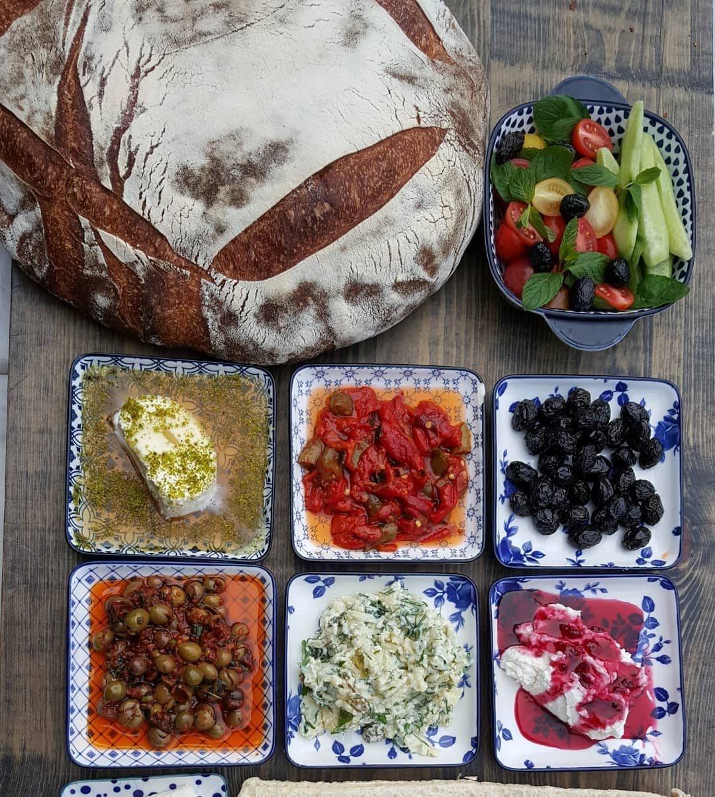
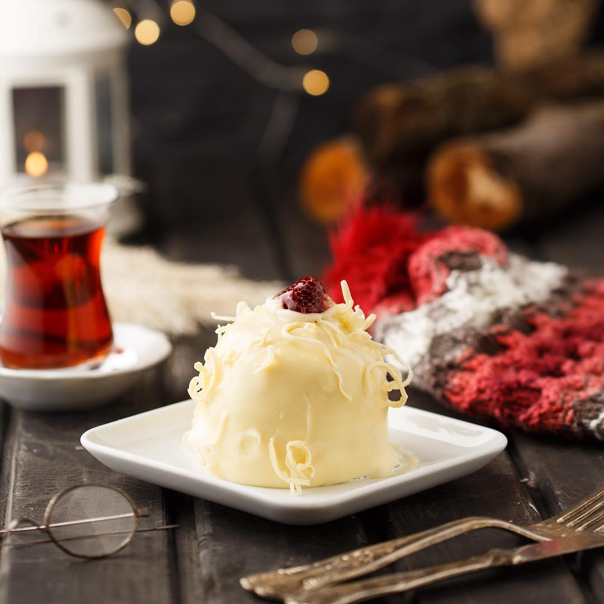
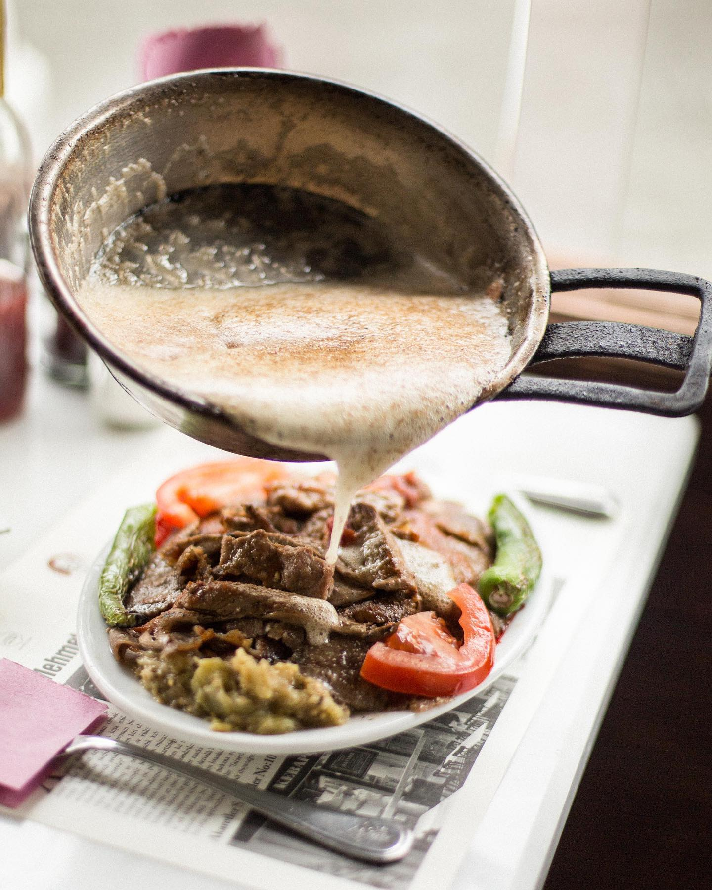
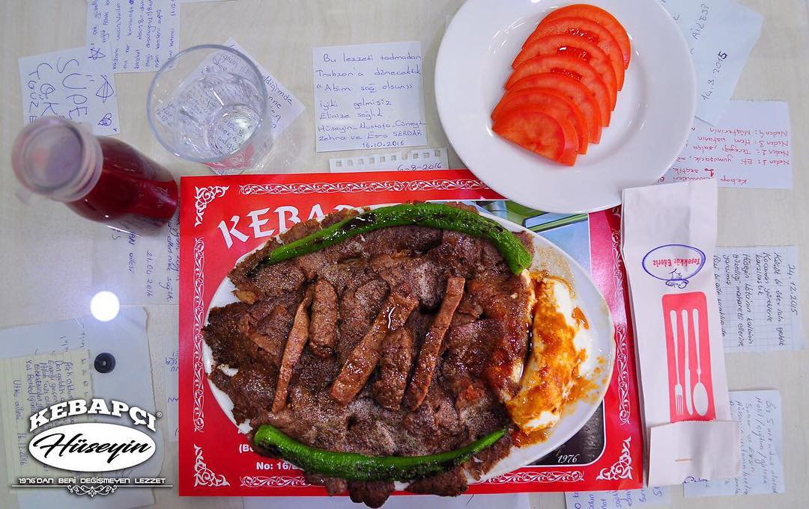
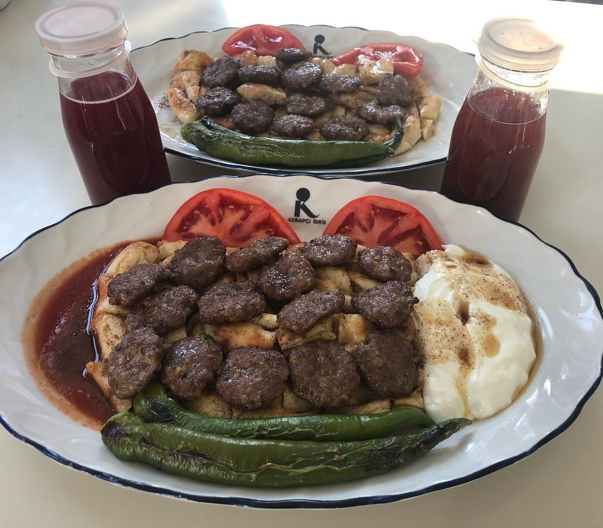
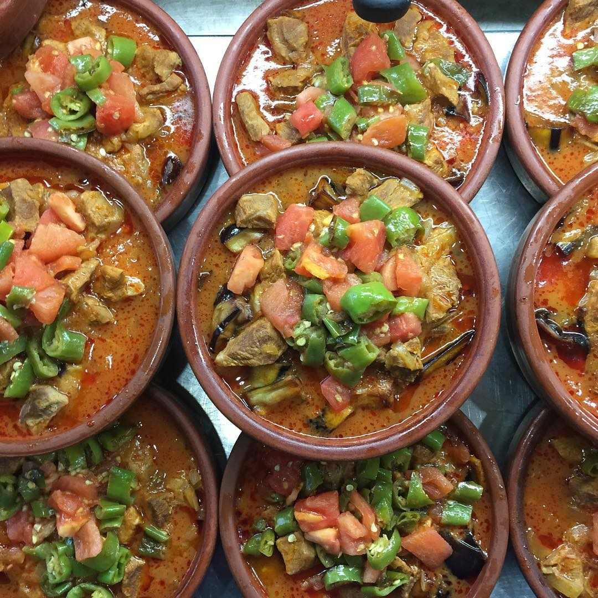
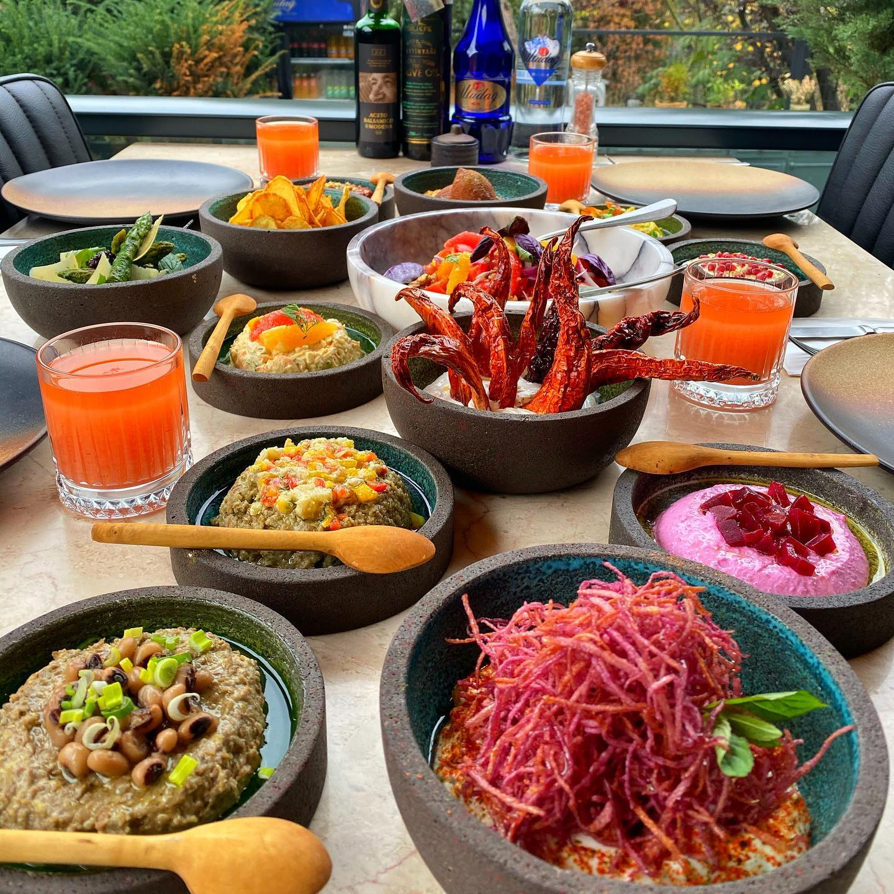
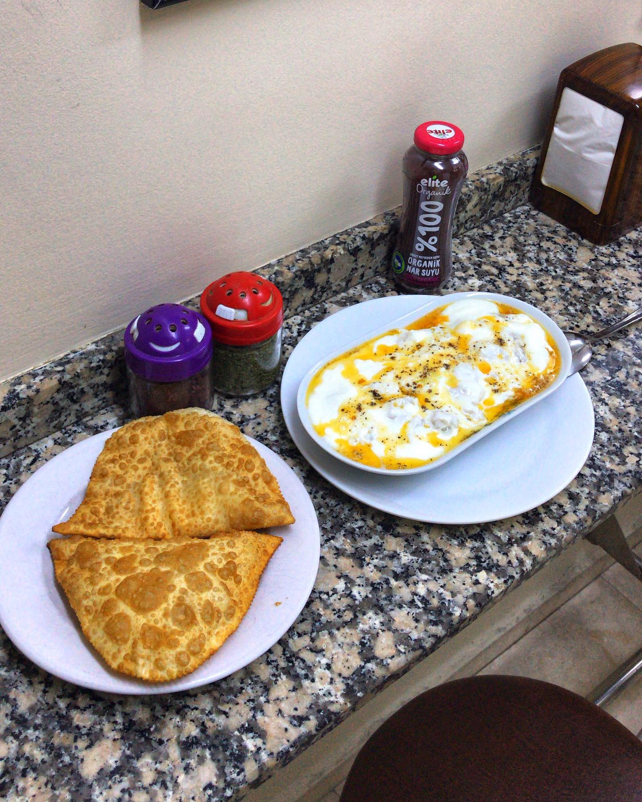
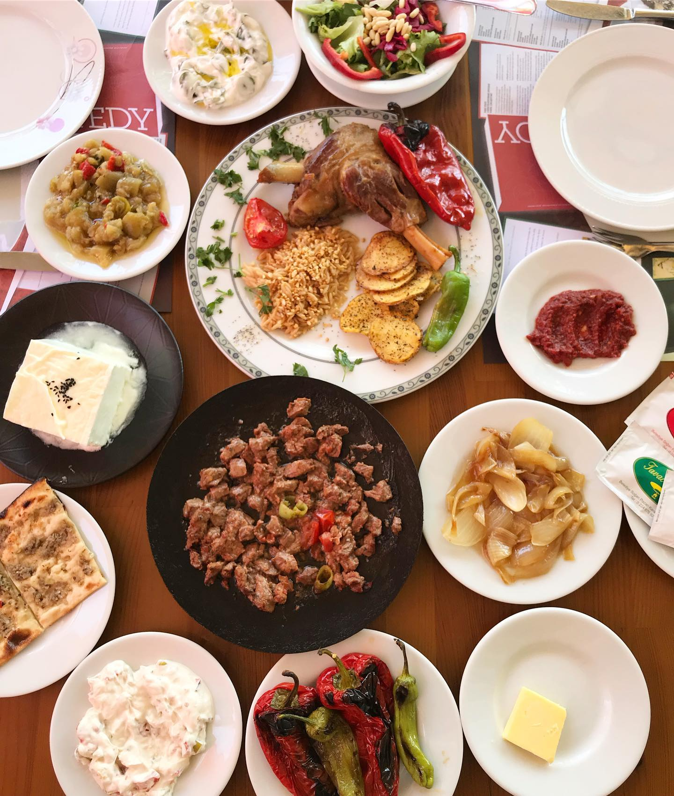

Bursa’nın en iyi fırınları arasında kesinlikle ilk sıralarda yer alıyor Pasto. Siz de güne fırından yeni çıkmış, kokusu ile aklınızı başınızdan alacak enfes ekmekler başta olmak üzere tadı damağınızda kalacak hamur işleri ile başlamak istiyorsanız istikametiniz Pasto olsun derim. Üstelik Pasto’da self servis kahvaltı seçeceği de var. Nedir bu self servis kahvaltı derseniz de dolaptan dilediğiniz kahvaltılığı seçip tepsinize alıyorsunuz. Geriye ödemenizi yapıp masanıza kurulmak kalıyor. Pasto’ya giderseniz Bursa’nın geleneksel lezzetlerinden olan cevizli lokumun ve tahinli pidenin ya da Bursalıların tabiri ile ’tahanlı’nın tadına da mutlaka bakın derim.
Peynir çeşidi bol bir sofrada kahvaltı etmeyi sevenlerdenseniz Ayanoğlu Mandıra & Kahvaltı tam size göre. Keçi sütü ile yapılan deri tulumu ve Arnavut loru başta olmak üzere kendi yapımları olan harika peynirler bulabilirsiniz Ayanoğlu Mandıra & Şarküteri’de. Bu peynir bolluğunun yanı sıra on iki çeşit zeytin ile hazırladıkları zahterli özel zeytin karışımları Ayanoğlu Mandıra & Şarküteri’nin öne çıkan lezzetlerinden. Siz de güne salaş ama damak çatlatan ürünlerle taçlanmış bir kahvaltı ile başlamak istiyorsanız Ayanoğlu Mandıra & Kahvaltı güzel bir alternatif olacaktır.
Çeşit çeşit zeytinli, bolca peynirli, çokça hamur işli uçsuz bucaksız bir serpe kahvaltı istiyorsanız Bursa’daki adresiniz Kahvaltı Kulübü olsun derim. Kahvaltı Kulübü’ne giderseniz serpme kahvaltıya ek olarak uzayıp giden kuymağından, parmak ısırtan kavurmasından ve bazlama ile hazırladıkları enfes tost seçeneklerinden size en cazip geleni söylemeyi de ihmal etmeyin derim.
Güzel bir serpme kahvaltı için uğrayabileceğiniz en keyifli mekanlardan biri de Bursa’nın en eskilerden olan Uzay Pastanesi. Ancak Uzay Pastanesi’ne kahvaltıya giderseniz tatlı için de mutlaka yer bırakın derim. Çünkü Uzay Pastanesi’nin efsane tatlıları, pastaları var. Özellikle ‘Beberoski’ dedikleri mini seçeceği de olan pastasının seveni çok. Beberoskinin bitter çikolatalı muzlu ve beyaz çikolatalı çilekli olmak üzere iki farklı çeşidi var.
İskenderinizi, eski döner hazırlama ve pişirme malzemelerinin sergilendiği tarihi bir konakta, müze havasında bir restoranda yemek istiyorsanız adresiniz İskender Yavuz İskenderoğlu olsun derim. Eski Osmanlı evlerinin mimarisine sadık kalınarak yenilenen bir konakta hizmet veren İskender Yavuz İskenderoğlu Bursa’nın en iyi iskendercileri arasında ilk sıralarda yer alıyor.
Mavi tenteli kebapçı ya da mavi dükkan olarak da bilinen Kebapçı İskender, Bursa Kebabı’nı tadabileceğiniz hem en lezzetli hem de en nostaljik mekanlardan biri. Bu muhteşem lezzetli tatmak için bir süre sıra beklemeniz gerektiğini de söylemeden geçmek olmaz. Ama emin olun beklediğiniz sıraya fazlasıyla değiyor.
Bursa’nın meşhur kebabını tadabileceğiniz en eski kebapçılardan biri de Tarihi Uludağ Kebapçısı. Bence Tarihi Uludağ Kebapçısı’nı lezzet sırrı kesinlikle o enfes tereyağında saklı. Kokusu bile insanın iştahını kabartmaya yetiyor. Siz de Tarihi Uludağ Kebapçısı Cemil & Cemal Usta’ya giderseniz kebabınızın üzerine bol tereyağı döktürmekten çekinmeyin derim.
Altı pideli, üzeri mis gibi tereyağlı bir Bursa Kebabı’na kim hayır diyebilir ki? Siz de Bursa’nın en meşhur kebabını daha lokal bir yerde yemek isterseniz tam bir esnaf lokantası olan Kebapçı Hüseyin güzel bir alternatif olacaktır. Kebapçı Hüseyin’e giderseniz Kemal Paşa tatlısından da mutlaka tadın derim.
Kat kat yükselen bir lezzet desem yeridir pideli köfte için. Altta muhteşem bir pide üzerinde kimyonlu köfte, bir yanında yoğurt diğer yanında ise salçalı sos ve tabi ki tuzlu tereyağı ile yapılan son dokunuş… Yazarken bile insanın canı çekiyor desem abartmış olmam. Siz de kebabın en lezzetli alternatifi Bursa’nın meşhur pideli köftesini tatmak isterseniz İdris Pideli Köfte’ye mutlaka bir şans verin derim.
Meşe odununun ateşinde taş fırında güveçte pişen yemeğin lezzeti de bir başka olur diyenlerdenseniz Güveç Lezzet Evi’ne mutlaka uğrayın derim. Her gün değişen çeşitleri ile insana lezzet şöleni yaşatan Güveç Lezzet Evi’nin öne çıkan lezzetleri arasında tabi ki güveçte kuru fasulye, kuzu incikli islim kebabı, dana rosto ve şalgamlı bulgur pilavı var.
Meyveli salatalardan harika mezelere, lokum gibi etlerden farklı bakliyatlara damak çatlatan lezzetler bulabileceğiniz Bursa restoranlarından biri de 21 Masa. Şık sunumları ile göz dolduran 21 Masa’nın en lezzetli yemeklerinden biri mekanın da spesiyallerinden olan kokoreçli nohut. Siz de farklı tatlar denemeyi sevenlerdenseniz 21 Masa’ya keyifli bir akşam yemeği için uğrayabilirsiniz. Söylemeden geçmek olmaz 21 Masa’nın harika bir de kahvaltısı var.
Bursa’nın Tarihi Bakırcılar Çarşısı’nda yer alan Akay Çiğ Börek ve Mantı Salonu tam bir aile işletmesi. Dededen toruna miras kalan ve şu an beşinci kuşak tarafından işletilen Akay Çiğ Börek ve Mantı Salonu yıllardır lezzetinden ödün vermeden hazırlıyor çiğ börek ve mantılarını. Siz de Eskişehir’deki mekanları aratmayacak lezzette bir çiğ börek ve mantı yemek istiyorsanız adresiniz Akay Çiğ Börek ve Mantı Salonu olsun derim.
Lokum kıvamında bir sac tava için Bursa’daki adresiniz Tavacı Refik olsun derim. Tavacı Refik’te oturduğunuz anda masanıza meşhur Karacabey soğanı ile hazırlanan pişmiş soğan, közlenmiş kırmızı biber, acılı ezme, turşu, tereyağı ve sıcak pide gibi harika ikramlıklar geliyor. Size de sac tavanızı sipariş verip ikramlıkların tadını çıkartmak kalıyor.
